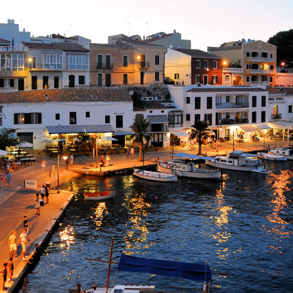

Lanzarote Arrecife
¿Quieres visitar Arrecife pero no sabes por dónde empezar? En este artículo te cuento algunas de las mejores cosas que ver en Arrecife (Lanzarote).
Arrecife
El Charco de San Ginés es, sin lugar a dudas, uno de los rincones más bonitos de Arrecife. Se trata de una entrada natural de agua de mar que llega hasta el corazón de la capital lanzaroteña, se llena y se vacía en función de las mareas, haciendo bailar así a las barquitas de pescadores que aquí fondean. El Charco está rodeado de vida, tanto de día como de noche, pues está repleto de bares y restaurantes para todos los gustos y edades. Es un lugar con encanto las 24 horas del día: al amanecer, al caer el sol, de noche, con marea alta o con marea baja, cada vista es una postal única. En el extremo más estrecho del Charco se puede ver el esqueleto de una ballena. Éste es el esqueleto real de una ballena hembra de 11 metros y 8 toneladas, que quedó varada en las costas de la isla de Tenerife en el año 1995. El esqueleto se expone para generar espacios de sensibilización ambiental. Capital de Lanzarote desde la antigua mitad del s.XIX, es para muchos, el patito feo de la isla. Y aunque es cierto que no es el pueblito de casas blancas bajas, si la exploras con atención, descubrirás que tiene mucho más por ofrecer de lo que parece en un principio y te animo a que le dediques ni que sea unas horas. Además, la ciudad natal de César Manrique, cuenta con una ubicación estratégica dentro de la geografía de la isla, ya que se encuentra cerca de todo y lejos de nada. Cuenta con todos los servicios y es, en mi opinión, la mejor base para estadías largas y desde la cual explorar el resto de la isla.
Carmen-N Web developer